Treadmill gait analysis from one video
Humotech Gait Analysis turns a single side-on video of someone walking on a treadmill into joint angles, gait events and spatiotemporal parameters. It also estimates the belt speed from the feet, so you don't need to read the treadmill.
A session always follows the same four steps. The app keeps track of them and shows what is still missing.
Calibrate the lens once from a checkerboard video.
Height, mass and the treadmill videos.
Click the four belt corners on one frame.
Runs in the background; results appear per trial.
2. Recording a session
Accuracy is decided at the treadmill, not in the software. Ten minutes of setup saves a lot of re-recording.
Camera placement
Position
- Static tripod, side-on to the treadmill (perpendicular to the walking direction).
- Higher than hip height, tilted down. Depth comes mostly from "the stance foot is on the belt", and a downward view constrains that much better.
- Whole body and the whole visible belt in frame for the entire trial.
Camera settings
- ≥ 60 fps (100–120 preferred), short shutter (≤ 1/500 s).
- Lock focus, zoom and exposure. Turn off stabilisation and lens correction.
- Same resolution and orientation (portrait/landscape) for all trials and the checkerboard video.
- Even lighting; shoes that contrast with the belt.
What to measure
| Measure | Needed? | Why |
|---|---|---|
| Belt length and width between the four corners you will click | Required | Sets the metric scale and the belt plane. |
| Subject height and mass | Required | Scales the OpenSim model. |
| Checkerboard video with the same camera settings | Strongly recommended | Focal length and lens distortion. Four points on a plane only weakly fix the focal length. |
| Treadmill speed shown on the display, per trial | Recommended | Checks the estimated belt speed. Put it in the file name, e.g. 1p2mps_walk.mov for 1.2 m/s, and the app fills it in. |
| A point off the belt with a measured position (e.g. handrail top) | Recommended | Pins down the camera tilt and focal length; added as a "known point" during belt calibration. |
| 3–5 s of quiet standing at the start | Nice to have | Cleaner model scaling. |
The checkerboard video
Print a checkerboard, glue it to something flat and rigid, and measure one square with a ruler (printers rescale).
Film it with the exact camera settings of the trials. Move and tilt it slowly (±30–45°) through the whole frame, including the corners. About 30–60 seconds is plenty.
The app asks for the number of inner corners, the points where four squares meet: one less than the number of squares in each direction.
3. Starting the app
The app runs on the analysis computer and opens in your browser. Install once (see the README), then:
conda activate humotech
humotech app # opens http://localhost:8000 with the data/ folder
humotech app --port 8080 # if port 8000 is taken
humotech app --host 0.0.0.0 # let other computers on the lab network open it (no login!)Open System first. It shows whether the GPU and every package are ready. The red and yellow boxes say exactly what is missing.
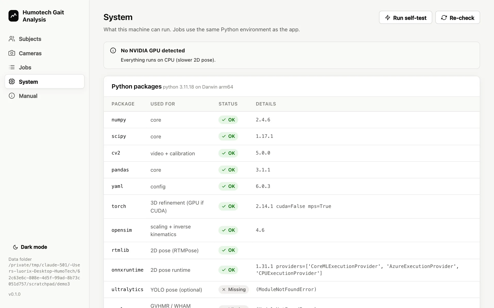
4. Step by step
The screenshots below come from a real session: one subject, three treadmill speeds (0.8, 1.2 and 1.6 m/s). Click any picture to enlarge it.
4.1 Create a subject
On Subjects, click New subject. The ID becomes the folder name (data/S01). Height and mass are needed before processing; the camera defaults to the lab camera.
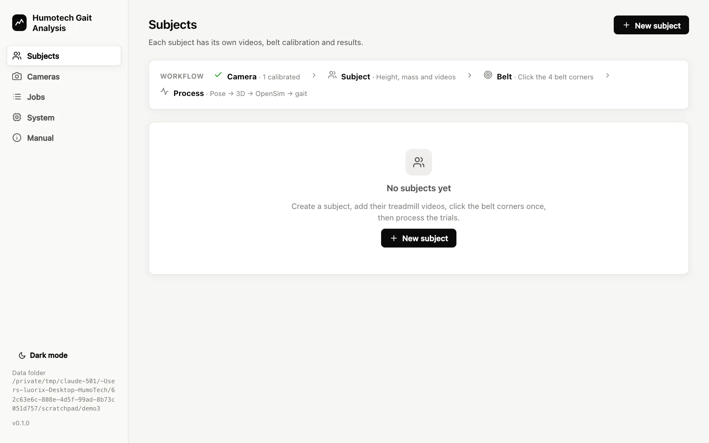
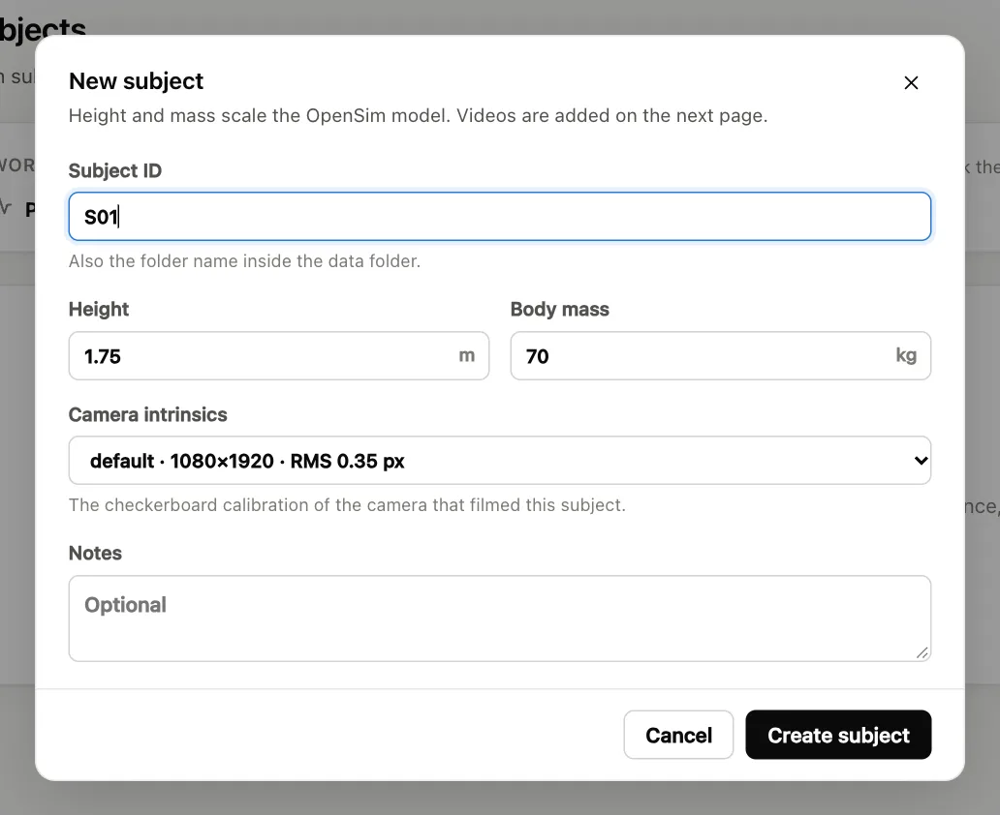
4.2 Add videos
Drop the videos onto the subject page (or click Add videos). Files copied straight into data/S01/ appear too, without uploading.
- Videos with
intrinsicorcheckerin the name are treated as checkerboard videos; everything else is a trial. Change it under All videos. - A speed in the name (
0p8mps,1p2mps) fills in the treadmill speed.
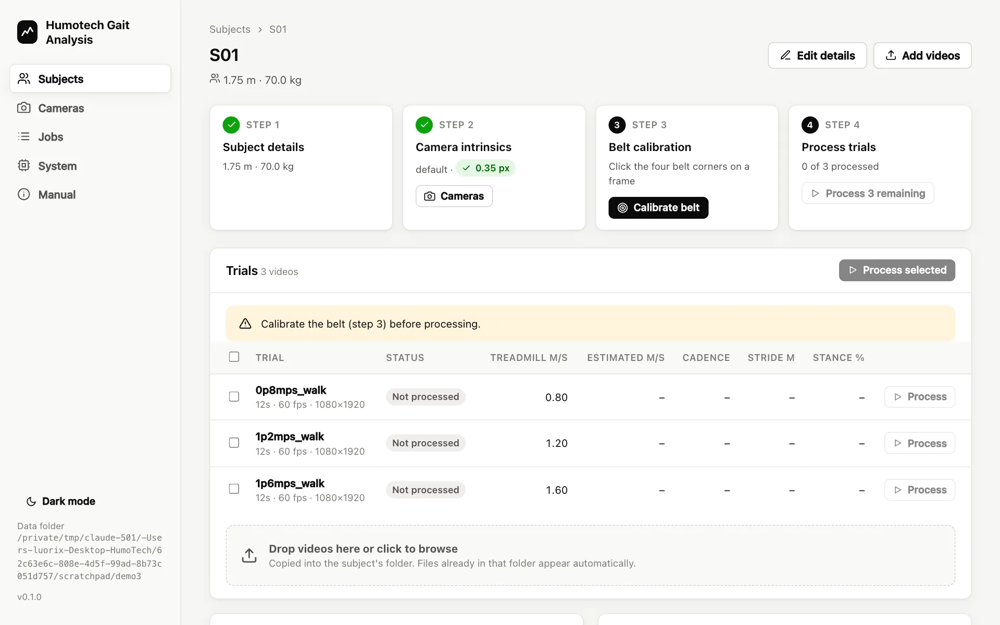
4.3 Calibrate the camera (once per camera)
Open Cameras → New from checkerboard. Pick the checkerboard video, enter the inner corners and the square size. The calibration runs in the background (about 20 s for a one-minute video) and the new camera appears in the list.
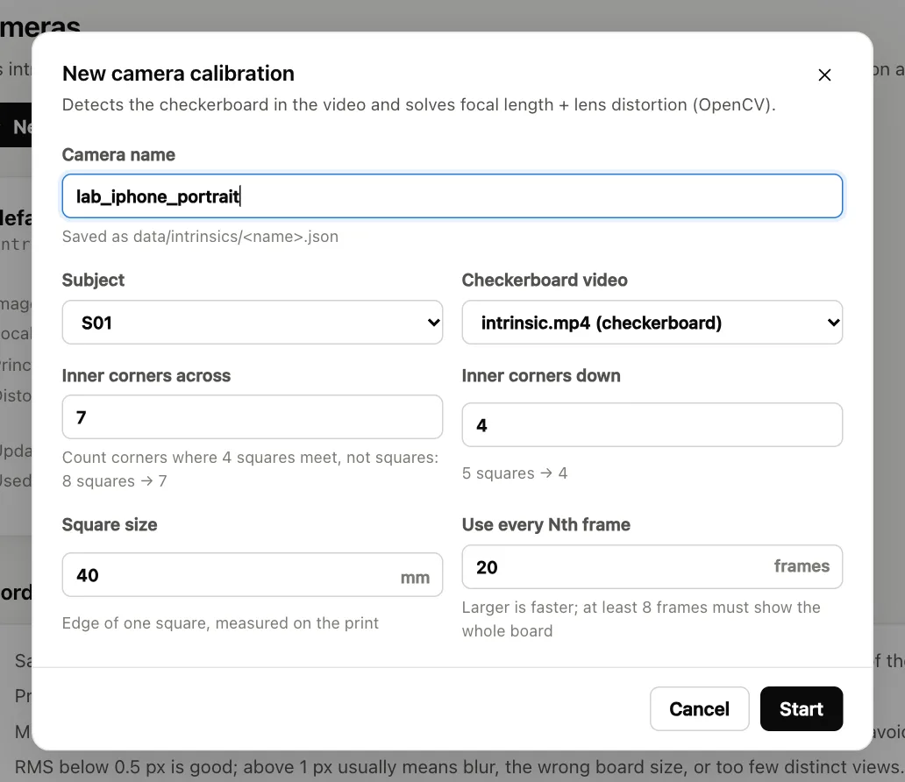
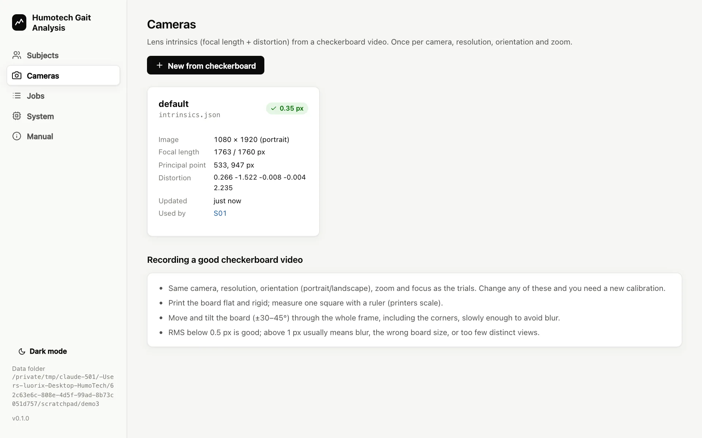
| RMS error | Meaning |
|---|---|
| below 0.5 px | Good. Use it. |
| 0.5–1 px | Usable; check the board size and focus. |
| above 1 px | Something is off: blur, wrong corner count or square size, too few views. |
Then choose the camera for the subject with Edit details. A camera is only valid for the same resolution, orientation and zoom.
4.4 Calibrate the belt (once per camera position)
This tells the software where the treadmill is. You click the four corners of the belt surface on one video frame. If the camera did not move between trials, one calibration covers all of them.
Left and right are the subject's
Front is the end of the belt the subject faces. Left and right are the subject's own left and right, not the left and right of the picture.
Seen from the side, the near corners are on one side of the subject and the far corners on the other. In the walkthrough below the subject walks to the left of the picture, so the front corners are on the left and the subject's left side faces the camera.
The origin is the centre of the belt surface. All 3D results use this frame, and it is also the OpenSim ground frame.
Watch it
Step through it
Corners swapped? If the dashed outline crosses itself, two corners were clicked in the wrong order (usually left and right). The page warns you; click the ↻ next to a point to place it again.
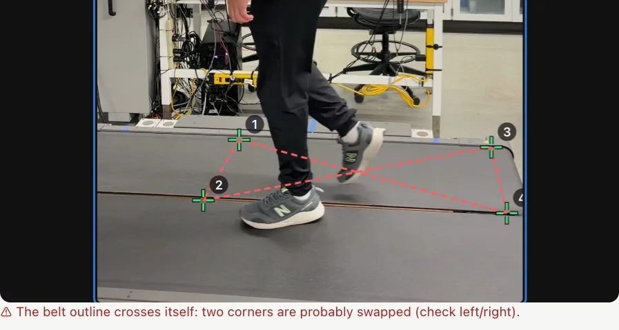
Is the calibration good?
| Check | Good | If not |
|---|---|---|
| RMS reprojection error | below 1 px (≤ 2.5 px acceptable) | Re-place points with the magnifier; check the belt size you entered. |
| Orange grid in the overlay | lies flat on the belt, lines parallel to its edges | Wrong corner order or wrong belt length/width. |
| Green posts | look 1 m tall next to the subject or the handrails | Focal length off: use camera intrinsics or add a known point. |
| Camera height | matches the tripod (tape-measure it once) | Same as above. |
Precision tips. Pick a frame where all four corners are clearly visible (use the frame slider), hover to use the magnifier, drag points to adjust, and nudge the selected point with the arrow keys (Shift for 5 px steps).
4.5 Process trials
Once the four step cards are green, click Process … remaining (or select trials in the table). The dialog shows the treadmill speed per trial and a few choices:
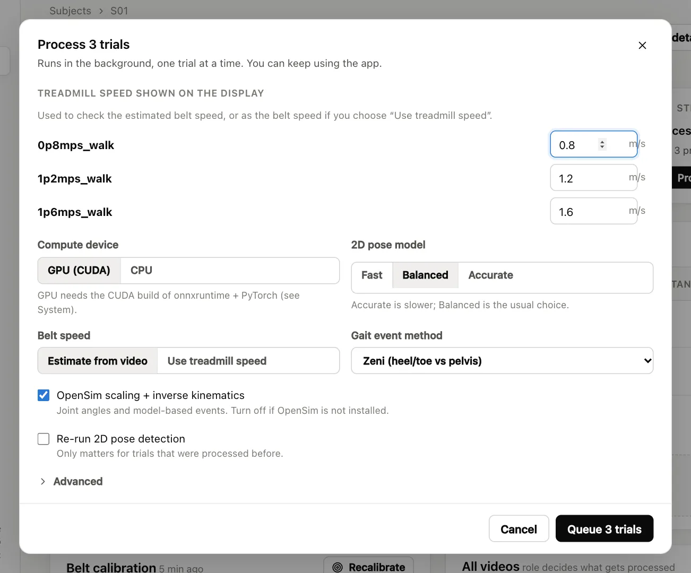
| Setting | Use |
|---|---|
| Compute device | GPU on the Ubuntu workstation; CPU elsewhere (slower 2D pose). |
| 2D pose model | Balanced normally. Accurate is slower. |
| Belt speed | Estimate from video. The treadmill speed is then only used as a check. Choose "Use treadmill speed" if you trust the display more. |
| Gait events | Zeni (heel/toe position relative to the pelvis). |
| OpenSim | On, for joint angles. |
| Re-run 2D pose | Only after changing the pose model; otherwise the previous keypoints are reused. |
Trials are processed one after another in the background. You can keep working, close the tab, or watch the progress:
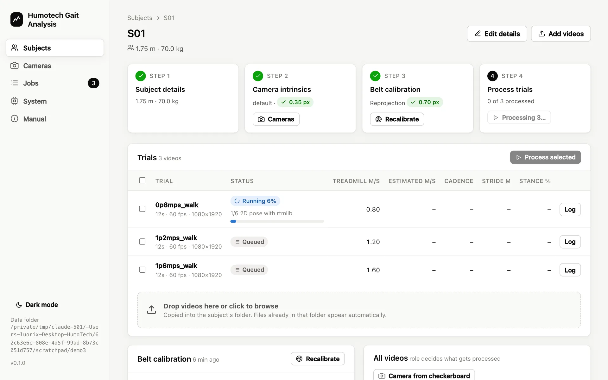
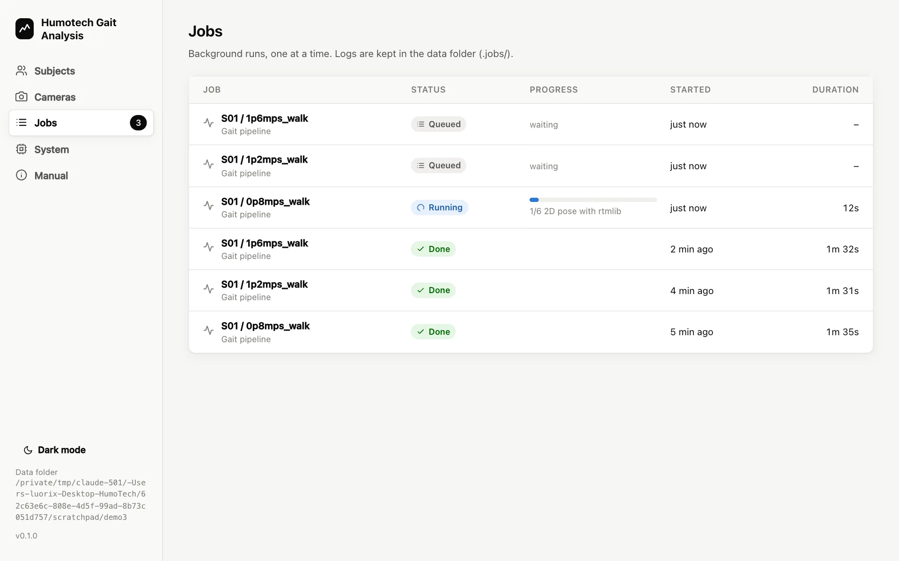
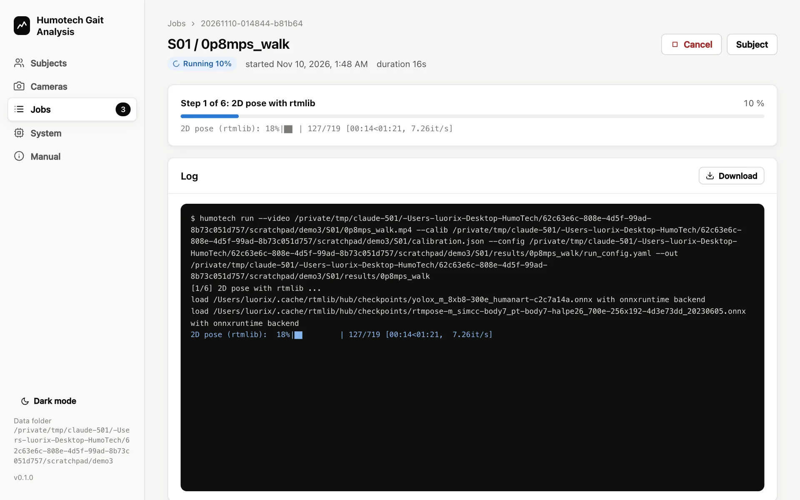
Processing time is mostly the 2D pose step (about 10 frames/s on a laptop CPU). The 12-second clips in these screenshots took about 1.5 minutes each on an Apple M4 CPU, OpenSim included; a GPU is several times faster.
4.6 Read the results
When trials are done, the trials table compares them and each row opens the full results.
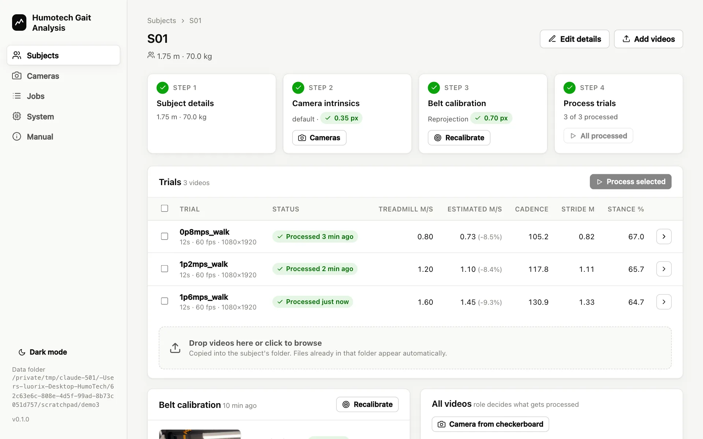
Headline numbers and the parameter table
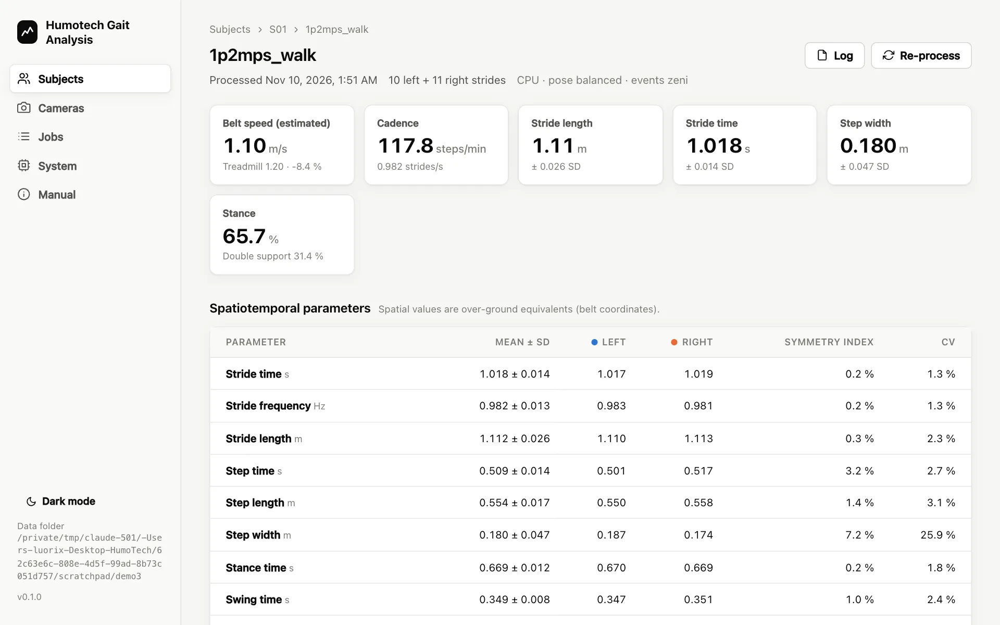
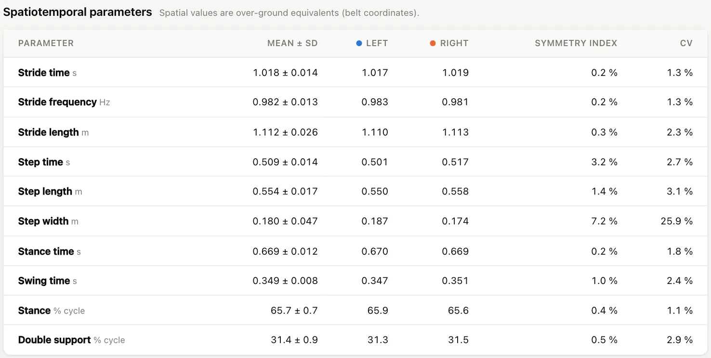
Joint angles
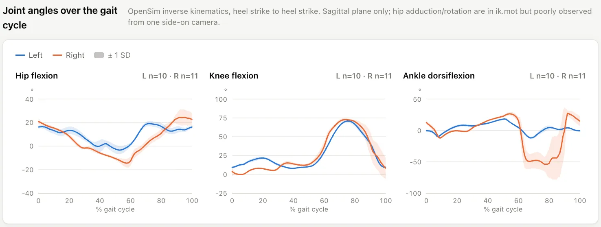
The far-side leg is less reliable. With one side-on camera, the leg farther from the camera is partly hidden behind the near leg, especially the foot in swing. In this example the right ankle (far side) drops unrealistically in swing while the left ankle looks normal. Trust the near side more, and judge the far side with the video review. Only sagittal-plane angles are plotted; hip adduction and rotation are in ik.mot but are poorly observed from the side.
Stride by stride
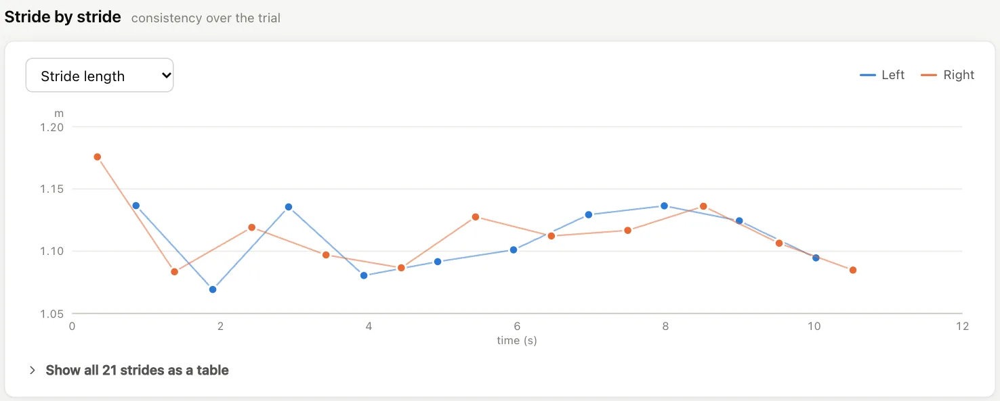
Check the tracking in the video
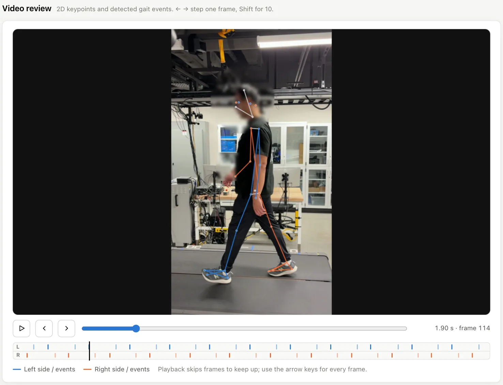
Belt speed, quality and files
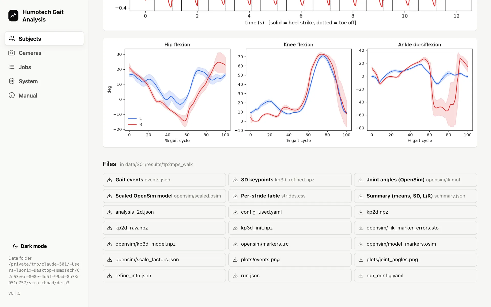
.osim and .mot for the OpenSim GUI).5. Gait parameters explained
| Parameter | Unit | Definition |
|---|---|---|
| Stride time / frequency | s / Hz | Heel strike to the next heel strike of the same foot, and its inverse. |
| Cadence | steps/min | 120 / stride time. |
| Stride length | m | Distance the foot travels over one stride, measured on the belt: belt speed × stride time, corrected for the subject drifting forward or back. Equals the over-ground stride length. |
| Step time / length | s / m | From the other foot's heel strike to this foot's heel strike. |
| Step width | m | Side-to-side distance between the two heels at heel strike. Less accurate than the other parameters with a single side-on camera. |
| Stance / swing | s, % cycle | Foot on the belt (heel strike → toe-off) and in the air (toe-off → heel strike). Typically about 60 / 40 % when walking. |
| Double support | % cycle | Both feet on the belt, summed over the two periods in a cycle. |
| Symmetry index | % | 200 · |L − R| / (L + R). 0 % is perfectly symmetric. |
| CV | % | Standard deviation / mean over all strides: how consistent the walking is. |
| Belt speed (estimated) | m/s | Speed of the stance foot moving backwards with the belt, from the reconstruction. Compared with the treadmill display as a check. |
6. Files and folders
Everything is plain files in one data folder, shared by the app and the command line:
data/
intrinsics.json # default camera
intrinsics/<name>.json # further cameras
S01/
subject.json # height, mass, camera, video roles
0p8mps_walk.mov ... # videos
calibration.json/.png # belt calibration + overlay picture
results/<trial>/ # everything below, per video
.jobs/ # logs of background runs| Result file | Content |
|---|---|
summary.json | Mean, SD, left, right, CV and symmetry for every parameter; belt speed estimates. |
strides.csv | One row per stride. Opens in Excel. |
events.json | Heel-strike and toe-off frames per foot. |
opensim/ik.mot, opensim/scaled.osim | Joint angles and the scaled model; open in the OpenSim GUI. |
kp3d_refined.npz, kp2d.npz | 3D and 2D keypoints for further analysis in Python. |
run_config.yaml, config_used.yaml, run.json | Exactly which settings produced these results. |
7. Command line
Everything in the app is also available as a command, useful for batch processing and scripts. The app runs these same commands in the background.
# camera intrinsics (the command used for the lab camera)
humotech intrinsics data/S01/intrinsic.mov --board 7x4 --square 0.04 --step 20 --out data/intrinsics.json
# belt calibration in an OpenCV window
humotech calibrate data/S01/0p8mps_walk.mov --belt-length 1.00 --belt-width 0.50 \
--intrinsics data/intrinsics.json --out data/S01/calibration.json
# one trial (use results/<video name> so the app finds it)
humotech run --video data/S01/1p2mps_walk.mov --calib data/S01/calibration.json \
--height 1.75 --mass 70 --device cuda --out data/S01/results/1p2mps_walk
# self-test with a synthetic walker of known answers
humotech synth --runAll options are in configs/default.yaml; see the README for the full reference.
8. Troubleshooting
"Address already in use" when starting the app
humotech app --port 8080. On a Mac this is often VS Code forwarding a port (Ports panel).A run fails with "onnxruntime fell back to CPU"
pip install "onnxruntime-gpu[cuda,cudnn]==1.22.*").Jobs fail with "No module named …"
conda activate humotech. The System page lists what is missing."Only N usable checkerboard views"
"Intrinsics are for a … image but this video is … (rotated)"
Calibration error is high, or the grid doesn't lie on the belt
Estimated belt speed is far from the treadmill display
Off by about the same percentage at every speed (for example always 8 % low): that is a scale error. Re-measure the belt length and width between the four points you click and recalibrate; a belt length 8 % too short makes every distance and speed 8 % too small. Also check that the treadmill display is right.
Off by different amounts: check the overlay, then the video review. If the feet are tracked poorly or left and right swap, the events and speed suffer. Better lighting and contrasting shoes help.
No joint angles on the results page
"OMP: Error #15 … libomp already initialized" on a Mac
pip uninstall torch, then conda install -c conda-forge pytorch.